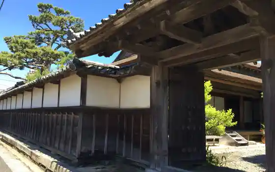
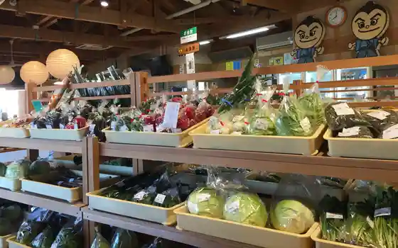
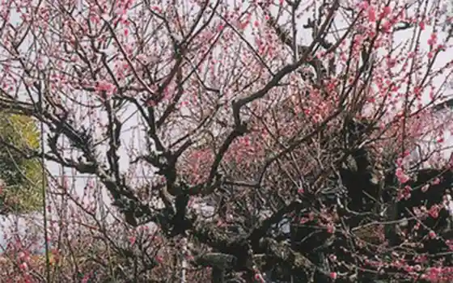

Japan / Kochi / Tano
Tano, Kochi: things to do, food and stays
Tano · Kochi
Tano
Highlighted on the Kochi map.

Sights
Oka Goten
Tano, Kochi · Official / source link
Tano Eki Ya
Tano, Kochi · 0887-38-7820 · Official / source link

Garyo Ume
Tano, Kochi · Official / source link

Daruma Yuhi
Tano, Kochi · Official / source link
Tano Town Hall
Tano, Kochi · 0887-38-2811 · Official / source link
Tano Kanzen Tenjitsu Shio Seien Taiken Shisetsu
Tano, Kochi · Official / source link
Yahatayama Kosenkyo
Tano, Kochi · Official / source link
Tateoka Nigo Sando
Tano, Kochi · Official / source link
Gun Bugyo Tokoro Ato
Tano, Kochi · Official / source link
Kyu Oka Ie House
Tano, Kochi · Official / source link
Niju Sanshi no Haka
Tano, Kochi · Official / source link
Kiyoka Michinosuke Kyutei
Tano, Kochi · Official / source link
Hamaguchi Osachi Kyutei
Tano, Kochi · Official / source link